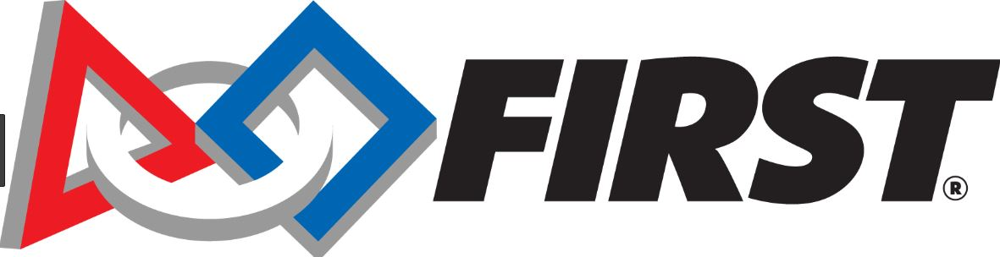

Volunteer Service
Stop Hunger
Project Manager
- Organized and planned a Stop Hunger campaign to donate food to New Orleans homeless community
- Donated 846 meals, 2,023 lbs. of food, and $2,538 benefitting 4 homeless missions in the New Orleans area
F.I.R.S.T
Mentor

- Organized and planned a Stop Hunger campaign to donate food to New Orleans homeless community
- Donated 846 meals, 2,023 lbs. of food, and $2,538 benefitting 4 homeless missions in the New Orleans area
Wolves on the Prowl
Site Coordinator
- Serve as a site leader for Loyola national day of service alongside 60 alumni chapters across the nation
Martin Luther King Week for Peace
Site Leader
- Facilitate a group service project among 4 New Orleans Universities and 70 service sights in honor of MLK Day